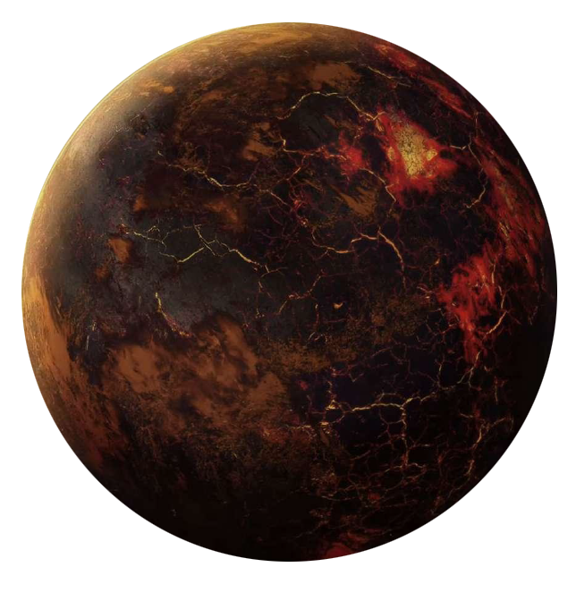

Sullust
sullust
Population: 18.5 Billion

Terrain: mountains, volcanoes, caves
Orbital Metrics: 263 days per year / 20 hours per day
Languages: Sullustese, Basic
Major Cities: Byllurun
Areas of Interest: SoroSuub Headquarters, Piringiisi
Major Exports: starships, computers, droids, hyperdrive and astrogation technology
Major Imports: foodstuffs, water
Astronavigation Data
Sullust is a volcanic world. Its atmosphere is filled with dangerous and poisonous gases, making life on the surface difficult. To escape this reality, the native Sullustan species quickly learned to live under the surface in natural caves and carved-out caverns.
The atmosphere is a roiling mix of noxious clouds and gases. The gas mix in a given area may change radically depending on the winds and the density of the substances involved. Those who venture onto its surface are advised to carry breath masks at the very least, and fully enclosed environmental protection suits in the worst areas.
Beneath the surface, pools of water and other formations allow the Sullustans to thrive. The Sullustans have created a technologically advanced society, and have engineered pressure relief vents, diversion tunnels, and other structures to help quell some of the volcanic activity and stabilize their homes and cities. Their aptitudes for piloting and navigation helped them to explore, create, and develop the Rimma Trade Route. Their efforts ultimately benefited one company the most—the powerful SoroSuub Corporation.
While SoroSuub long dominated Sullustan society, by the time of the Clone Wars it was powerful enough to mandate joining the Separatist cause over the objections of the government, known as the Sullustan Council. When the Separatists collapsed, the company quickly reformed itself, becoming a staunch supporter and ally of the Empire. As many Sullustans opposed the Empire, SoroSuub dissolved the Sullustan Council and took direct control of the government.
A significant percentage of Sullustans continue to oppose the Empire. The human-centric attitudes and actions irritate and anger the Sullustans. Their opposition to these attitudes and totalitarian policies is slowly influencing SoroSuub decision-making. However, some are unwilling to wait for corporate minds to change and are establishing resistance groups of their own, if not joining the Rebels directly. There is hope that if the Rebels continue to make progress, and their support among the Sullustan people continues to grow, the world might someday change sides.
SoroSuub Corporation is an industrial powerhouse and one of the galaxy's preeminent interstellar corporations. Although capable of producing starships of all makes and types, it primarily sells its warships to planetary governments and corporate clients, having lost out to other manufacturers for Imperial contracts. SoroSuub produces an enormous array of planetary vehicles, which can be found throughout the galaxy. It has a highly successful weapons division, which broke into the Imperial market by creating the Stormtrooper One clone of the standard BlasTech E-11 blaster carried by stormtroopers. They build highly specialized droids, and have very successful tool and technical equipment divisions.